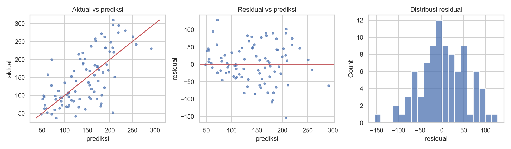

Metrik Regresi dan Analisis Residual¶
Tujuan pembelajaran¶
- Menghitung dan menafsirkan MAE, MSE, RMSE, dan R².
- Membuat dan membaca plot residual.
- Mengenali masalah seperti galat yang membesar pada rentang tertentu (heteroskedastisitas).
Metrik¶
Dengan nilai sebenarnya \(y_i\), prediksi \(\hat{y}_i\), residual \(e_i = y_i - \hat{y}_i\), dan \(n\) sampel:
| Metrik | Satuan | Sifat | Kapan dipakai |
|---|---|---|---|
| MAE | Sama dengan target | Rata-rata galat; tahan outlier | Galat tipikal mudah dijelaskan |
| MSE | Kuadrat satuan target | Menghukum galat besar | Fungsi tujuan optimasi |
| RMSE | Sama dengan target | Menghukum galat besar; ≥ MAE | Galat besar sangat merugikan |
| R² | Tanpa satuan | Proporsi variasi yang dijelaskan relatif terhadap rata-rata | Perbandingan lintas skala; bukan satu-satunya ukuran |
Metrik persentase seperti MAPE mudah dipahami tetapi bermasalah bila target bernilai nol atau mendekati nol. Rasio RMSE terhadap MAE yang jauh di atas 1 menandakan adanya galat besar sesekali.
Residual¶
Residual adalah selisih nilai sebenarnya dan prediksi. Model yang baik memiliki residual yang tampak acak: rata-rata mendekati nol, tanpa pola terhadap prediksi, dan sebaran kira-kira sama di semua rentang. Pola yang jelas berarti ada struktur yang belum ditangkap:
| Pola pada plot residual vs prediksi | Arti | Tindakan |
|---|---|---|
| Lengkungan | Hubungan non-linear terlewat | Fitur polinomial, model non-linear |
| Corong (galat melebar) | Varians tidak konstan | Transformasi target (log), metrik relatif |
| Kelompok terpisah | Variabel penting hilang | Tambah fitur atau fitur kelompok |
Implementasi langkah demi langkah¶
Model: regresi linear pada Diabetes (data uji 89 sampel). Program examples/estimation/residual_analysis.py; program lengkap ada di akhir bagian ini.
Langkah 1: melatih model dan menghitung residual¶
| residual_analysis.py | |
|---|---|
pred = model.predict(X_test) adalah prediksi untuk data uji. resid = y_test - pred menghitung residual: nilai sebenarnya dikurangi prediksi. Residual positif berarti model memprediksi terlalu rendah; negatif berarti terlalu tinggi. Karena y_test dan pred sejajar, hasilnya satu angka per sampel uji.
Langkah 2: metrik ringkas¶
| residual_analysis.py | |
|---|---|
Interpretasi. MAE 42,79; MSE 2900,2; RMSE 53,85; R² 0,453. RMSE/MAE = 1,26: ada beberapa galat yang lebih besar dari tipikal.
Langkah 3: ringkasan residual¶
Konsep. Residual model yang baik tampak acak: rata-rata mendekati nol, simetris, dan sebarannya tidak bergantung pada nilai prediksi.
| residual_analysis.py | |
|---|---|
resid.mean(), resid.std(), resid.skew() (kemiringan), resid.min(), resid.max() meringkas distribusi residual. np.corrcoef(np.abs(resid), pred)[0, 1] menghitung korelasi antara besar galat (np.abs) dan nilai prediksi: bila positif, galat membesar di prediksi tinggi.
Residual -> rata-rata 3.91 | std 54.02 | skew -0.18 | min -154.5 | maks 128.3
Korelasi |residual| dengan nilai prediksi: 0.28
Interpretasi. Rata-rata residual +3,91 (mendekati nol; sedikit positif karena sampel uji kecil), simpangan baku 54,02, skewness -0,18 (hampir simetris), rentang -154,5 sampai +128,3. Korelasi |residual| dengan prediksi 0,28 menunjukkan indikasi awal bahwa galat membesar pada prediksi yang lebih tinggi.
Langkah 4: galat per rentang prediksi¶
| residual_analysis.py | |
|---|---|
| Kode | Penjelasan |
|---|---|
pd.qcut(pd.Series(pred, ...), 3, labels=[...]) |
Membagi prediksi menjadi 3 kelompok berukuran sama (tertil): rendah, sedang, tinggi. |
resid.abs().groupby(bins, observed=True).mean() |
Rata-rata galat mutlak (MAE) di tiap kelompok. |
Interpretasi. MAE per tertil prediksi adalah 26,9 (rendah), 48,8 (sedang), dan 52,8 (tinggi): galat lebih besar pada prediksi tinggi, indikasi varians tidak konstan (heteroskedastisitas). Dengan 89 sampel ini hanya petunjuk, bukan bukti pasti.
Langkah 5: galat terbesar¶
| residual_analysis.py | |
|---|---|
resid.abs().sort_values(ascending=False).head(3).index mengambil indeks tiga sampel dengan galat mutlak terbesar. Perulangan mencetak nilai aktual, prediksi, dan residual (:+.0f selalu menampilkan tanda + atau -).
Tiga galat terbesar (aktual, prediksi, residual):
idx 56: 52, 206, -154
idx 77: 200, 72, +128
idx 211: 70, 180, -110
Interpretasi. Sampel 56 (aktual 52, prediksi 206, residual -154), sampel 77 (aktual 200, prediksi 72, +128), sampel 211 (aktual 70, prediksi 180, -110). Memeriksa kasus ekstrem seperti ini sering mengungkap data salah, fitur yang hilang, atau kelompok khusus.
Langkah 6: gambar diagnostik¶
Tiga grafik berdampingan: (1) scatter prediksi vs aktual dengan garis diagonal lims sebagai "prediksi sempurna"; (2) scatter prediksi vs residual dengan garis horizontal di 0; (3) histogram residual.

Cara membaca.
- Aktual vs prediksi (kiri): sumbu-x prediksi, sumbu-y nilai sebenarnya. Titik tersebar lebar di sekitar diagonal merah; model cenderung menyusutkan ke tengah (prediksi tidak menjangkau nilai target ekstrem rendah dan tinggi), ciri model dengan sinyal terbatas.
- Residual vs prediksi (tengah): idealnya awan titik acak di sekitar garis 0 dengan lebar sama. Di sini terlihat melebar pada prediksi tinggi, konsisten dengan angka per tertil.
- Histogram residual (kanan): mendekati lonceng simetris di sekitar 0, tanda tidak ada kemiringan besar.
Program lengkap (residual_analysis.py)
Kesalahan umum¶
Hindari
- Melaporkan R² saja tanpa melihat residual.
- Membandingkan RMSE antar dataset dengan skala target berbeda.
- Memakai MAPE pada target yang bisa bernilai nol.
- Menganggap residual berpola sebagai "derau".
- Mengevaluasi residual pada data latih saja.
Latihan¶
- Latih model pada
log(target)dan hitung ulang metrik pada skala asli. Apakah MAE per tertil lebih merata? - Hitung MAE untuk 10% prediksi tertinggi.
- Buat plot residual terhadap fitur
bmi. Adakah pola? - Mengapa RMSE selalu ≥ MAE?
Ringkasan¶
MAE dan RMSE memberi galat dalam satuan target, R² membandingkan dengan prediksi rata-rata. Metrik ringkas harus dilengkapi analisis residual untuk menemukan pola yang tidak tertangkap model.
Berikutnya: Validasi Silang dan Optimasi.